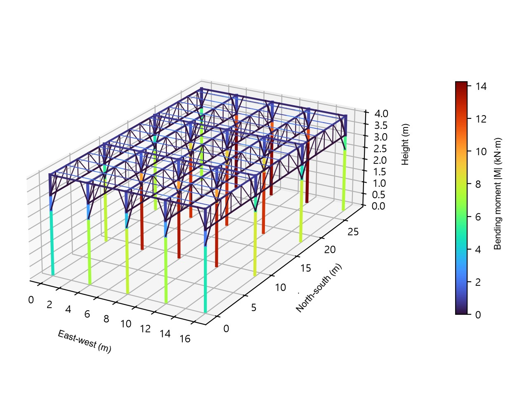

Agrivoltaic structure design basics
Column grid, 4 m clearance, Korean wind and snow codes and a 3D check that changed the column size. A worked agrivoltaic design of about 1 MW.
What makes agrivoltaic structures different
An agrivoltaic structure is a steel canopy that farm machines drive under. In our design for a roughly 1 MW project in Jeollanam-do, the module lower edge sits at 4.0 m, columns stand on a 4.0 m by 9.0 m grid and the deciding check was not the module rail but the interior column, which only a 3D model sized correctly.
Korea is preparing a dedicated agrivoltaic law, and the draft Enforcement Decree (pre announced on 16 September 2026, not yet final) sets two numbers that shape every design: supports at least 4 m apart and a structure no lower than 2.5 m. Wind and snow loads follow the general building code. The result is a tall, light, open frame with large wind area, which is a different problem from a ground mount at 1 m.
The layout
| Item | Value |
|---|---|
| Capacity | 986.40 kWp, 240 W modules x 4,110, fixed 25° tilt |
| Module | 1,720 x 708 x 32 mm, 16.6 kg, one module across |
| Row spacing (north to south) | 1.80 m, shading ratio 29.1% of the site |
| Column grid | 4.0 m east to west x 9.0 m north to south |
| Heights | Module lower edge 4.0 m, lowest member 2.6 m (knee brace), truss underside 3.2 m |
| Foundation | Screw piles, fixed base assumed, confirmed by ground survey and load tests |
The frame is a column grid with parallel chord trusses, 0.8 m deep, spanning north to south between columns. Module rails run continuously east to west across the trusses. Knee braces at 34° stiffen the north to south frames and short braces at 45° stiffen the east to west lines. Columns are steel pipe, the other members are cold formed tubes and lipped channels in coated steel with a yield strength of 275 MPa (pipe 235 MPa), to be confirmed by mill certificates.
Loads
We apply KDS 41 12 00 for loads, KDS 41 17 00 for seismic action and KDS 41 30 10 for steel members. For this site the code maps give a basic wind speed of 34 m/s and a ground snow load of 0.6 kN/m². With terrain category C and flat ground, the design velocity pressure is 0.574 kPa.
| Load item | Value | Note |
|---|---|---|
| Gust factor, module rail | 2.271 | Small loaded area (one module row) |
| Gust factor, frame, column, foundation | 1.561 | One grid unit, 4.0 x 9.0 m |
| Snow load | 0.330 kPa | On horizontal projection |
| Net pressure, downward (max) | 2.453 kPa | Normal to the module plane |
| Net pressure, uplift (max) | −2.041 kPa | Normal to the module plane |
| Seismic coefficient Cs | 0.249 | Zone I, site class S4 assumed before survey, R = 2 |
The net pressure coefficients come from the code table for free standing monoslope roofs, which distinguishes open flow (more than half of the space below is open, as here) from obstructed flow. We check wind from the front and from the back, each in both load cases, together with the strength combinations 1.4D, 1.2D+1.6S+0.5W, 1.2D+1.0W+0.5S, 0.9D+1.0W, 1.2D+1.0E+0.2S and 0.9D+1.0E. For the frame members the governing case was 1.2D+1.0W+0.5S with wind from the front.
Why the 3D model changed the column
A common shortcut is to analyse one north to south frame in 2D and copy the result to every column. In a grid, an interior column carries the trusses of two bays, while the 2D frame assumes it carries one. Our first 2D design gave a column of 139.8 mm diameter. The 3D model of a 4 by 3 bay block with 20 columns, all trusses, rails, beams and braces under the same combinations, showed the interior column's foundation reaction at about 1.9 times the 2D value, and the column was increased to 165.2 x 4.0 mm. Member sizes are now set from the larger of the 2D and 3D results, and foundations from the 3D results.

Results
| Member | Section | Ratio 2D | Ratio 3D |
|---|---|---|---|
| Module rail | C-100x50x20x2.3 | 0.949 | |
| Truss top chord | Box 60x60x2.3 | 0.389 | 0.596 |
| Truss web members | Box 50x50x2.3 | 0.494 | 0.529 |
| Column | Pipe 165.2x4.0 | 0.630 | 0.648 |
| East to west beam | Box 60x60x2.3 | 0.248 | 0.308 |
All members stay at or below a ratio of 0.95, which leaves at least 5% margin. The module rail deflects 17.8 mm against a limit of 20 mm (span/200), and the column head moves 19.9 mm sideways against 26.7 mm (height/150). The largest foundation forces per column are 36.8 kN compression, 17.6 kN uplift, 10.0 kN horizontal and 14.3 kN·m at the base. Steel per grid unit is 355.8 kg, or 129.0 kg per kW.
Independent check
Every structural calculation we issue is checked with OpenSees, an open source structural analysis program. For this design the north to south frame was solved again under 20 load combinations and the reactions, moments and displacements matched our own solver exactly (difference 0.000%), and the 3D grid above was added as the second, independent check. The check runs automatically whenever a structural drawing is produced.
What is still open before construction
- Review and seal by a licensed structural engineer; our document is a draft calculation until then.
- Ground survey, screw pile capacity from the supplier and on site pull out and lateral load tests above the design reactions.
- Higher wind at the array edges and the torsion from front and back pressure difference, for the bracket details.
- Mill certificates for the coated steel and the actual site class after the survey.
- A final comparison with the agrivoltaic Enforcement Decree once it is issued.
If you are planning a project in Korea and want this check done on your site, email the drawings or the parcel list to info@ecokkorea.co.kr. We reply with the scope and schedule first.
Sources: our draft structural review for the project (November 2026); KDS 41 12 00, KDS 41 17 00, KDS 41 30 10; draft agrivoltaic Enforcement Decree pre announced 16 September 2026. Project name and location withheld.